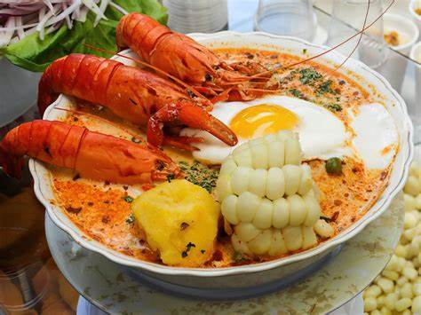

Recette de le peruvienne soupe chupe de camarones

Riche soupe dans le sud de Peru
Le "chupe de camarones" est une riche soupe fait en crevettes et chilis rouges of Peru. De preference est cuissine en l'hiver, mais peux lui manger en quelque saison de l'annee.
Ingredients
- crevettes
- chili type limo
- chuli panca
- d'oeufs
- lait
- ognios
- ail
- huacatay
- concentre de poisson
Preparation
- faites revenir l'ail et l'ognion
- ajouter le chili panca
- faites revenir les crevettes
- retirer les crevettes
- ajouter le concentre de poisson
- porter le melange a ebullition
- ajouter les crevettes, huacatay, les oeufs
Rendre a la page index